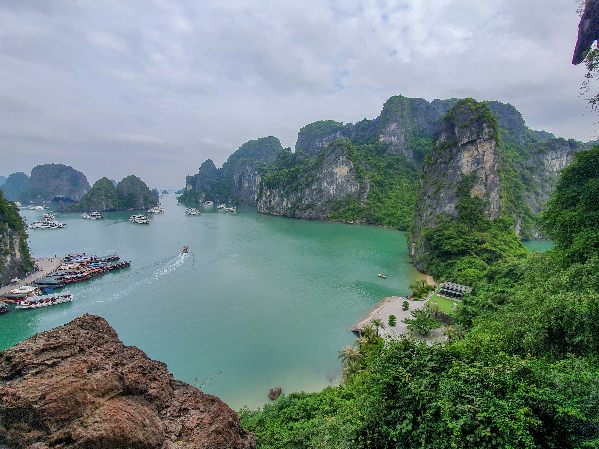
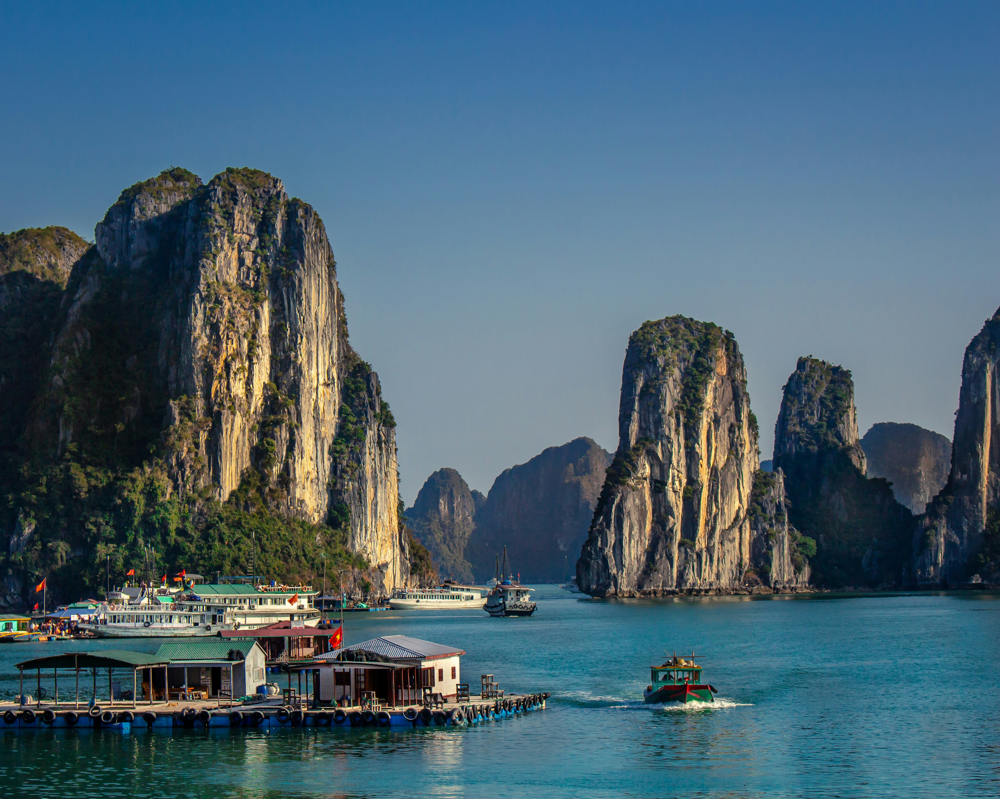

About Ha Long Bay
Welcome to Ha Long Bay, a UNESCO World Heritage Site and one of Vietnam's most iconic destinations. Located in the Gulf of Tonkin, Ha Long Bay is renowned for its emerald waters, towering limestone islands, and breathtaking natural scenery.
Legend has it that Ha Long Bay was formed by dragons descending from the heavens, their tails creating the majestic limestone karsts that dot the bay. Whether exploring the hidden caves and grottos nestled within the islands or cruising along the tranquil waters aboard a traditional junk boat, Ha Long Bay offers a sense of serenity and wonder that is truly unparalleled.
With its stunning landscapes and rich biodiversity, Ha Long Bay is a paradise for nature lovers and adventurers alike. From kayaking through secluded lagoons to hiking to panoramic viewpoints, there's no shortage of opportunities to experience the beauty and magic of this natural wonder.
Location
Nestled in the Gulf of Tonkin in northeastern Vietnam, Ha Long Bay is renowned for its breathtaking natural beauty, featuring thousands of limestone karsts and isles topped with lush vegetation. This UNESCO World Heritage Site is a testament to the power of nature, with its emerald waters and towering rock formations creating a mesmerizing landscape that captivates visitors from around the globe. Ha Long Bay is not only a feast for the eyes but also a haven for adventure seekers, offering opportunities for kayaking, cave exploration, and overnight cruises. Its unparalleled beauty and unique geological features make it one of Vietnam's most popular tourist destinations.

For those seeking a truly unforgettable experience, exploring Ha Long Bay from the sky offers a unique perspective on this natural wonder. Helicopter tours provide an unparalleled opportunity to admire the bay's stunning landscapes from above, offering panoramic views of its towering limestone pillars, hidden caves, and picturesque fishing villages. Many tour packages include exhilarating helicopter rides that soar over the bay, allowing visitors to marvel at its beauty from a bird's-eye view. Whether it's a short scenic flight or a comprehensive tour, witnessing Ha Long Bay from the helicopter is sure to be an unforgettable highlight of any trip to Vietnam.
One of the most fascinating aspects of Ha Long Bay is its floating villages, where local residents have built their homes on stilts above the tranquil waters. These houses, often painted in vibrant colors, are a unique expression of traditional Vietnamese architecture and culture. Visitors to Ha Long Bay can explore these floating communities, interact with the friendly locals, and learn about their way of life. From colorful fishing boats bobbing in the bay to children playing on makeshift rafts, the floating villages of Ha Long Bay offer a glimpse into a world where land and sea converge in harmony. Exploring these unique dwellings is not only fun and educational but also a chance to appreciate the resilience and ingenuity of the people who call Ha Long Bay home.
